-
第1届
-
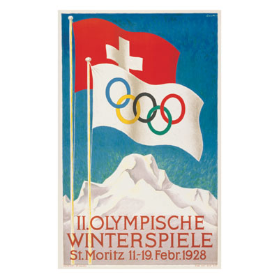
第2届
-
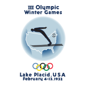
第3届
-
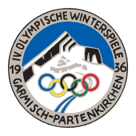
第4届
-
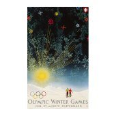
第5届
-
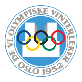
第6届
-
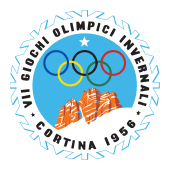
第7届
-
第8届
-
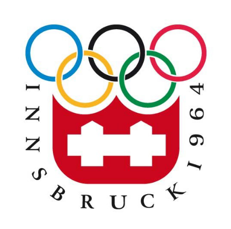
第9届
-
第10届
-
第11届
-
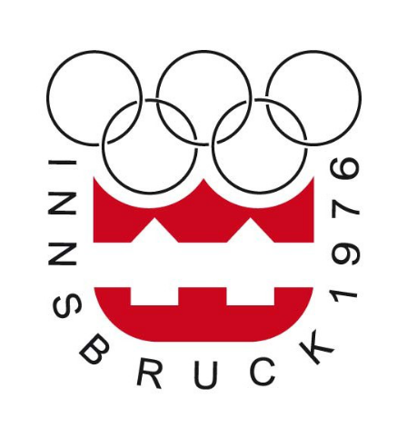
第12届
-
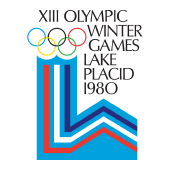
第13届
-
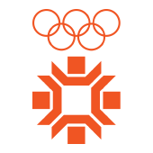
第14届
-
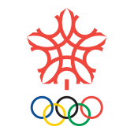
第15届
-
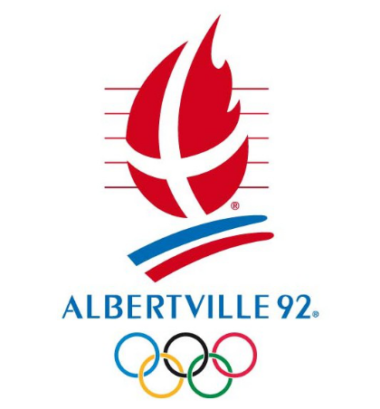
第16届
-
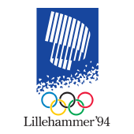
第17届
-
第18届
-
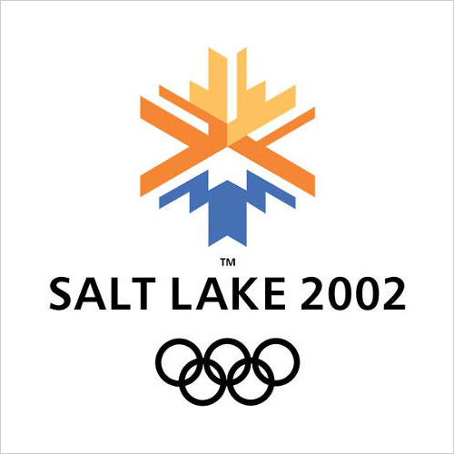
第19届
-
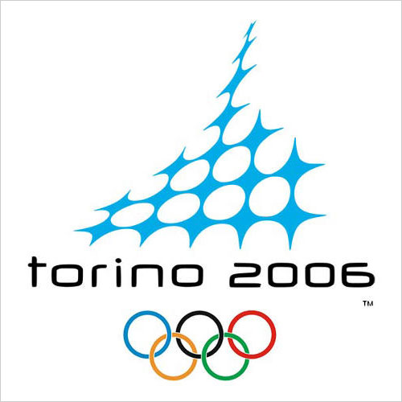
第20届
-
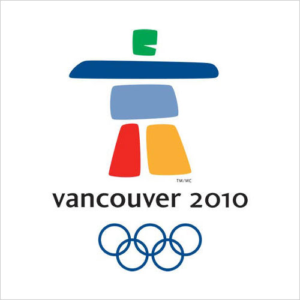
第21届
-
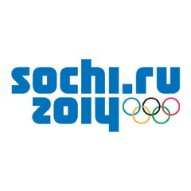
第22届
-
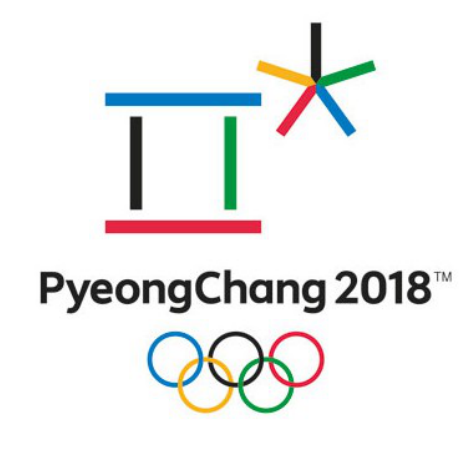
第23届
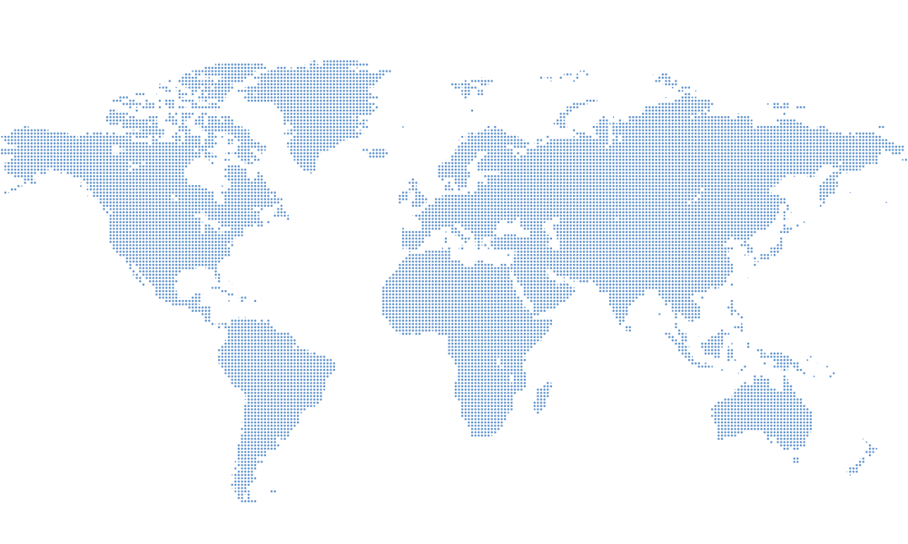
-
第1届冬奥会
- 举办时间：1924年
- 举办地点：夏蒙尼
- 代表团数：16个
- 比赛项目：16项目
- 参赛人数：258人
-
第2届冬奥会
- 举办时间：1928年
- 举办地点：圣莫里茨
- 代表团数：25个
- 比赛项目：14项
- 参赛人数：464人
-
第3届冬奥会
- 举办时间：1932年
- 举办地点：普莱西德湖
- 代表团数：17个
- 比赛项目：14项
- 参赛人数：252人
-
第4届冬奥会
- 举办时间：1936年
- 举办地点：加尔施-帕滕基兴
- 代表团数：28个
- 比赛项目：17项
- 参赛人数：646人
-
第5届冬奥会
- 举办时间：1948年
- 举办地点：圣莫里茨
- 代表团数：28个
- 比赛项目：22项目
- 参赛人数：669人
-
第6届冬奥会
- 举办时间：1952年
- 举办地点：奥斯陆
- 代表团数：30个
- 比赛项目：22项
- 参赛人数：694人
-
第7届冬奥会
- 举办时间：1956年
- 举办地点：科蒂纳丹佩佐
- 代表团数：32个
- 比赛项目：24项
- 参赛人数：8212人
-
第8届冬奥会
- 举办时间：1960年
- 举办地点：斯阔谷
- 代表团数：30个
- 比赛项目：27项
- 参赛人数：665人
-
第9届冬奥会
- 举办时间：1964年
- 举办地点：因斯布鲁克
- 代表团数：36个
- 比赛项目：34项
- 参赛人数：1091人
-
第10届冬奥会
- 举办时间：1968年
- 举办地点：格勒诺布尔
- 代表团数：37个
- 比赛项目：35项
- 参赛人数：1158人
-
第11届冬奥会
- 举办时间：1972年
- 举办地点：札幌
- 代表团数：35个
- 比赛项目：35项
- 参赛人数：1006人
-
第12届冬奥会
- 举办时间：1976年
- 举办地点：因斯布鲁克
- 代表团数：37个
- 比赛项目：37项
- 参赛人数：1123人
-
第13届冬奥会
- 举办时间：1980年
- 举办地点：普莱西德湖
- 代表团数：37个
- 比赛项目：38项
- 参赛人数：1072个
-
第14届冬奥会
- 举办时间：1984年
- 举办地点：萨拉热窝
- 代表团数：49个
- 比赛项目：39项
- 参赛人数：1272人
-
第15届冬奥会
- 举办时间：1988年
- 举办地点：卡尔加里
- 代表团数：57个
- 比赛项目：46项
- 参赛人数：1423人
-
第16届冬奥会
- 举办时间：1992年
- 举办地点：阿尔贝维尔
- 代表团数：64个
- 比赛项目：57项
- 参赛人数：1801人
-
第17届冬奥会
- 举办时间：1994年
- 举办地点：利勒哈默尔
- 代表团数：67个
- 比赛项目：61项
- 参赛人数：1737人
-
第18届冬奥会
- 举办时间：1998年
- 举办地点：长野
- 代表团数：72个
- 比赛项目：68项
- 参赛人数：2176人
-
第19届冬奥会
- 举办时间：2002年
- 举办地点：盐湖城
- 代表团数：77个
- 比赛项目：78项
- 参赛人数：2399人
-
第20届冬奥会
- 举办时间：2006年
- 举办地点：都灵
- 代表团数：80个
- 比赛项目：84项
- 参赛人数：2508人
-
第21届冬奥会
- 举办时间：2010年
- 举办地点：温哥华
- 代表团数：82个
- 比赛项目：86项
- 参赛人数：2566人
-
第22届冬奥会
- 举办时间：2014年
- 举办地点：索契
- 代表团数：87个
- 比赛项目：98项
- 参赛人数：2873人
-
第23届冬奥会
- 举办时间：2018年
- 举办地点：平昌
- 代表团数：92个
- 比赛项目：102项
- 参赛人数：2914人
-
第1届冬奥会
- 举办时间：1924年
- 举办地点：夏蒙尼
- 代表团数：16个
- 比赛项目：16项目
- 参赛人数：258人